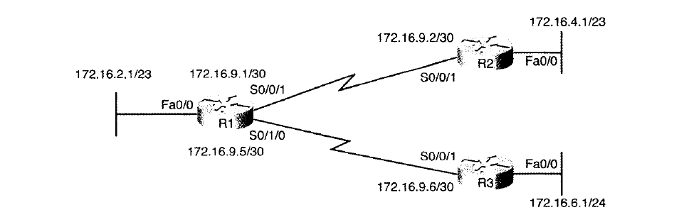

- 首頁
- 大一
- 大二
- 大三
- 大四
- 網路相關
- LAN Design
- Layer 2
- Layer 3
VLSM
VLSM(Variable Length Subnet Masks)，指的是在同一個分級式網路裡使用一個以上的遮罩。
無級式與分級式路由協定
在建立 VLSM 時，需要使用可支援 VLSM 的路由協定 (無級式路由協定)，也就是 RIP-2、EIGRP、OSPF。
| 協定 | 是否為無級式 | 傳送的更新包含遮罩 | 支援VLSM | 支援手動路徑彙整 |
|---|---|---|---|---|
| RIP-1 | 否 | 否 | 否 | 否 |
| IGRP | 否 | 否 | 否 | 否 |
| RIP-2 | 是 | 是 | 是 | 是 |
| EIGRP | 是 | 是 | 是 | 是 |
| OSPF | 是 | 是 | 是 | 是 |
VLSM 設定
Cisco 路由器無法直接設定啟用或停用 VLSM，從設定的角度來看，VLSM 純粹是 ip address 的附加效果。具體來說，路由器是透過集中設定每個 IP 位址使用不同的遮罩來產生 VLSM 的效果，前提是這些 IP 位址必須屬於相同的分級式網路。
找出網段重疊的部分
- 計算每個子網路的範圍 (Network ID ~ Broadcast IP)
- 依數字順序列出 Network ID
- 檢查相鄰項目是否有子網路範圍有重疊
舉例來說
| 子網路 | Network ID | Broadcast ID |
|---|---|---|
| R1 LAN | 172.16.2.0 | 172.16.3.255 |
| R2 LAN | 172.16.4.0 | 172.16.5.255 |
| R3 LAN | 172.16.5.0 | 172.16.5.255 |
| R1-R2 直連 | 172.16.9.0 | 172.16.9.3 |
| R1-R3 直連 | 172.16.9.4 | 172.16.9.7 |
可以發現 R2 LAN 與 R3 LAN 重疊了
加入新子網路到現有架構
- 按設計的要求替新子網路算出合適的 Netmask
- 計算分級式網路的所有子網路編號
- 列出現有網段的清單
- 將重疊的網段排除在外
- 從剩餘的網段中選擇
舉例來說，將一段 /23 的子網路加入：

至少列出前 5 個可能的子網路：
| 子網路 | Network ID | Broadcast ID |
|---|---|---|
| 第1個(零子網路) | 172.16.0.0 | 172.16.1.255 |
| 第2個 | 172.16.2.0 | 172.16.3.255 |
| 第3個 | 172.16.4.0 | 172.16.5.255 |
| 第4個 | 172.16.6.0 | 172.16.7.255 |
| 第5個 | 172.16.8.0 | 172.16.9.255 |
列出現有網段的清單
| 子網路 | Network ID | Broadcast ID |
|---|---|---|
| R1 LAN | 172.16.2.0 | 172.16.3.255 |
| R2 LAN | 172.16.4.0 | 172.16.5.255 |
| R3 LAN | 172.16.5.0 | 172.16.5.255 |
| R1-R2 直連 | 172.16.9.0 | 172.16.9.3 |
| R1-R3 直連 | 172.16.9.4 | 172.16.9.7 |
比對兩張表，發現第2.3.5個子網路有重疊，因此不考慮使用這些子網路
子網路切割計畫
- 選擇合適的 VLSM 遮罩
- 首先分配最大的網段，避免小子網路的不當分配產生重疊
- 進一步劃分大網段，分配給小網段
- 每個遮罩都不斷重複步驟2